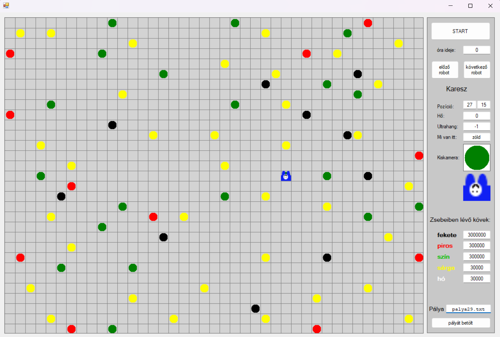

OOP Karesz feladatok
Vélemény
Szerettem ezeket a feladatokat. Néha elfelejtettem, hogy melyik a jobb meg a bal kezem, de jó volt nézni ahogy Karesz futkos ide-oda és néha köveket szed fel vagy rak le.
Egy példa kód:
using System;
using System.Collections.Generic;
using System.ComponentModel;
using System.Data;
using System.Drawing;
using System.Linq;
using System.Text;
using System.Windows.Forms;
using System.Threading;
namespace Karesz
{
public partial class Form1 : Form
{
void menj_es_rakj(int lepesek)
{
for (int i = 0; i < lepesek; i++)
{
Lépj();
Tegyél_le_egy_kavicsot();
}
}
void L_Betu(int db, int irány)
{
menj_es_rakj(db);
Fordulj(irány);
menj_es_rakj(db-1);
}
void DIÁK_ROBOTJAI()
{
Robot karesz = Robot.Get("Karesz");
karesz.Feladat = delegate ()
{
L_Betu(5, jobbra);
Fordulj(jobbra);
L_Betu(5, balra);
};
}
}
}
